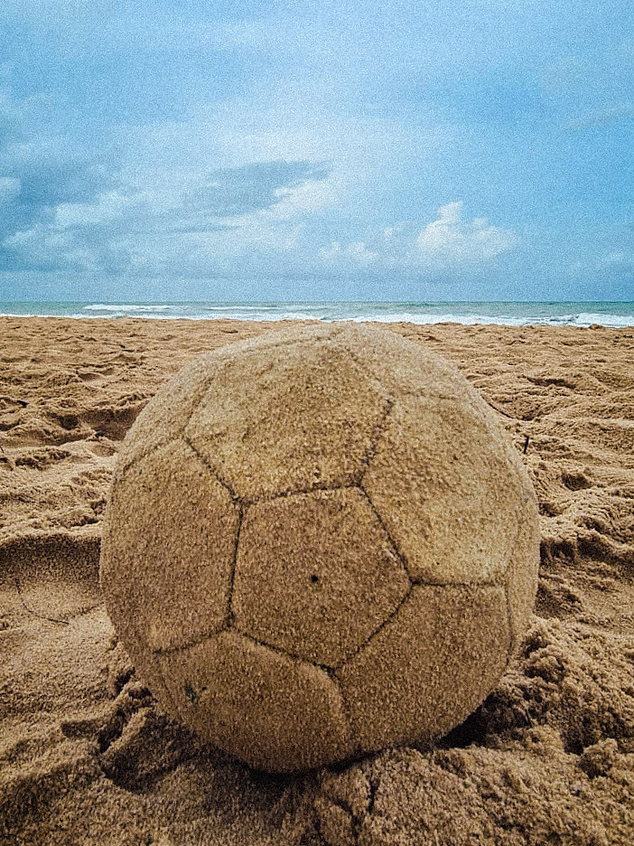
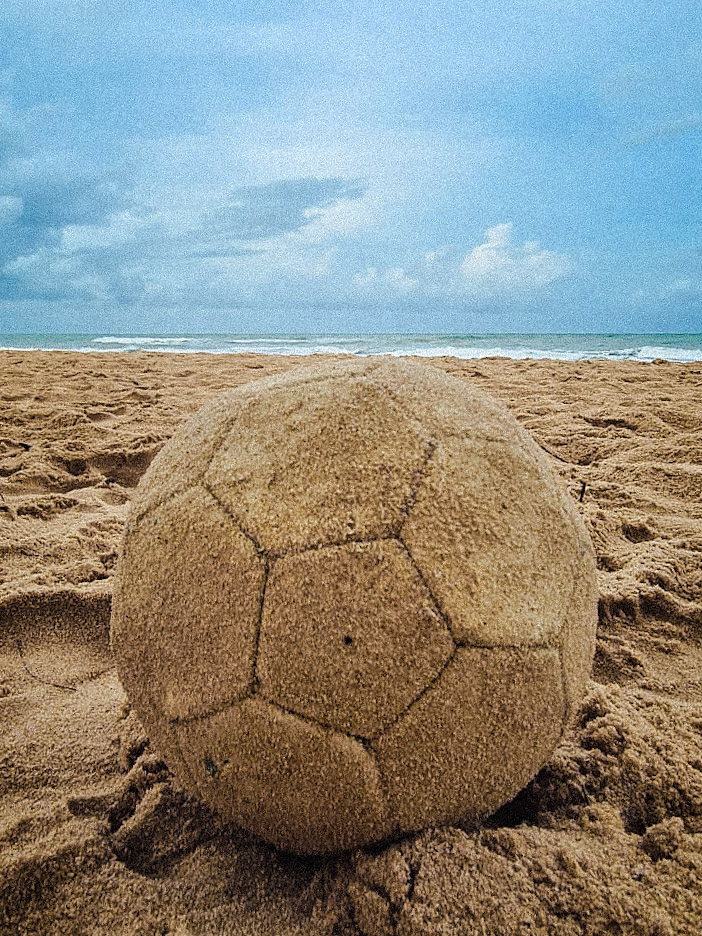

Olá! É um prazer tê-lo aqui!

Vamos começar do começo:
Quem sou eu?
Sou Gabriel Ayres! Apaixonado por inovação, marketing, empreendedorismo e transformação, sou um estudante de Ciência da Computação na Universidade Federal de Pernambuco (UFPE). Além disso, trabalho como monitor de redação na Casa da Redação de Patricia Cylene, curso para vestibulandos focado no ENEM e que me permite, de fato, exercer uma das coisas que mais amo: ensinar e transformar. Afinal, a jornada ao vestibular, em virtude de todas as variáveis envolvidas, é transformadora para todos os lados! Por fim, materializando a minha última paixão, o empreendedorismo, também trabalho no CITi, empresa júnior da UFPE, onde atuo como analista de Marketing, dando voz, portanto, às mensagens da nossa empresa para o mundo!
Inspirações
Durante a nossa vida, abraçamos algumas figuras como inspiração para aquilo que buscamos nos tornar. Quando penso por esse lado, vejo, em primeiro lugar, meus pais como os ícones máximos daquilo que busco ser. A personalidade e o que representam, não somente para mim, como para todos ao nosso redor, é realmente cativante.
Quando saímos do âmbito familiar, também tenho algumas figuras nas quais busco inspiração, das quais três são as mais destacadas: Cristiano Ronaldo, Dwayne Johnson e Clóvis de Barros. Cada um deles representa um ponto que valorizo na minha vida: Cristiano representa a disciplina que busco ter. The Rock representa a superação diária e Clóvis de Barros, o pensamento feliz e crítico acerca de tudo o que me cerca, tornando-me capaz de expressar aquilo que busco da melhor maneira possível.
Qual a minha verdadeira paixão?
Eu costumo dizer que sou um amante de muitas coisas, cujo coração bate mais forte por apenas uma: a comunicação! Sou fascinado em perceber como a comunicação se desenrola em diversos contextos e no poder que ela tem de influenciar e mover pessoas em prol de um mesmo caminho. Isso, sem dúvida, permite que sejamos agentes do próprio futuro que queremos trilhar.
Vez ou outra, me perco em discursos e análises de discursos. Realmente é algo que me fascina. Afinal, se queremos ter um legado na nossa breve passagem por aqui, precisamos deixar a nossa mensagem, aquela que acreditamos que pode realmente mudar o mundo, influenciar pessoas para um bom caminho ou alguma outra trilha que faz com que os atingidos pela sua mensagem cresçam!
Vamos aos hobbies!
Alguns hobbies se destacam bastante na minha vida! Por ser um amante de várias coisas, posso afirmar categoricamente que uma das atividades que mais me diverte é fotografar. Gosto de colecionar momentos, lembrar daqueles instantes de alegria que gostaria de converter em eternidade. Além de fotografar, sou apaixonado em edição de fotos. Vejo a edição como a forma de expressar o meu olhar sobre o mundo e dar ênfase às partes que mais acho encantadoras nele! As fotos que deixo a seguir são alguns dos exemplos da minha subjetividade posta em prática!
Outra atividade que posso dizer que me faz feliz de forma genuína é observar o pôr do sol, considero essa vista como uma das mais bonitas que qualquer ser humano possa experimentar.
Por fim, mas não menos importante, a praia é a minha válvula de escape. Estando triste ou feliz, basta um pé na areia e água do mar para lavar tudo aquilo que poderia me afligir em algum momento. Extretamente renovador!
Galeria


 

E aí, gostou do conteúdo? Que tal me seguir nas redes sociais? Basta clicar em um dos ícones abaixo que você será redirecionado automaticamente! Vem me conhecer mais!